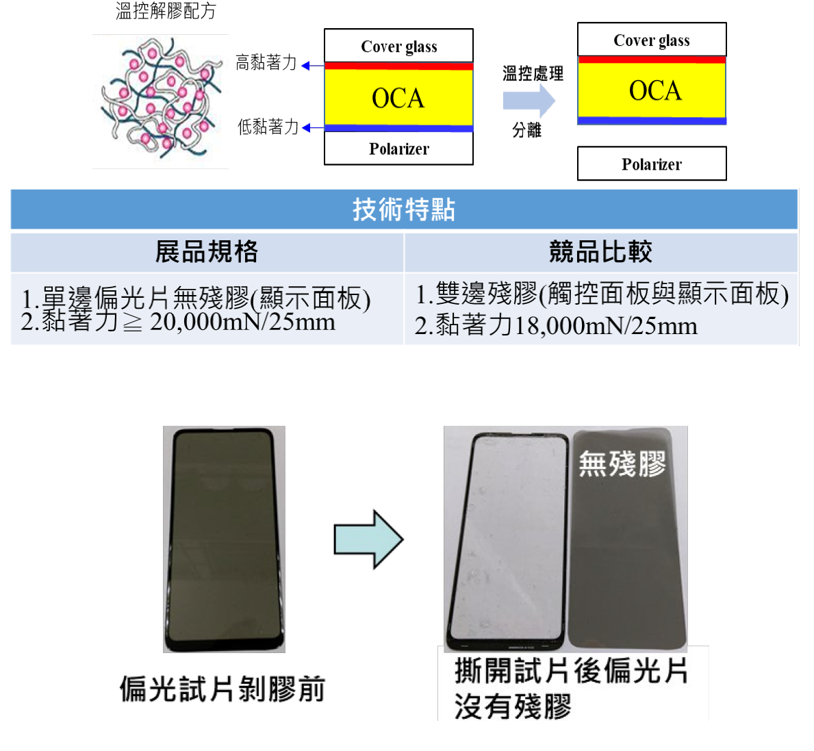

| 低溫無殘膠拆解 OCA 膠 Temperature control for assisting residue-free removal of OCA (optical clear adhesive) |
| OCA 膠於面板正常工作溫度具一定黏著力，使面板結構於加 工或使用過程中不剝離。本技術是利用改變配方調控黏著力再 搭配溫度控制達到黏性降低且剝離後單面無殘留物，使偏光片或面板其他微元件易取下，達到可拆解回用。 OCA glue has a certain adhesive force at the normal working temperature of the panel. Panel structure does not peel off during processing or use. This technology is to adjust the adhesive force by changing the formula and then match the temperature control to reduce the viscosity and leave no residue on one side after peeling. Make it easy to remove the polarizer or other micro-components of the panel, so that it can be disassembled and reused.  |
| 技術洽詢聯絡人：蔣明學 聯絡電話：06-6939130 手機:0937-391972 E-mail：chiangmh@itri.org.tw |